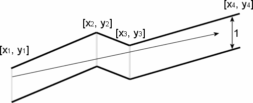

|
|||||||||||||||||
|
Server time: 2006-01-10 05:48:08 |
SPOJ Problem Set102. GX Light Pipeline IncProblem code: LITEPIPE
The GX Light Pipeline Inc. started to prepare bent pipes for the new transgalactic light pipeline. However during the design of the pipeline they ran into the problem of determing how far the light can reach inside the pipe. In order to improve your scarce budget you decided to fill a summer job at the GX Light Pipeline Inc. Now it's your task to create a program which computes how far the light reaches in the pipeline. The pipeline consists of seamlessly welded together segments made of non-reflecting opaque materials. The upper points of the pipe contour are described by a sequence of points [x1, y1], [x2, y2], [x3, y3], ..., [xn, yn], where xk < xk+1. The bottom points of the pipe contour are the same points with y-coordinate decreased by 1. The company wants to find the points with maximal x-coordinate that the light will reach. The light is emitted by a segment source with endpoints [x1, y1] and [x1, y1-1] (endpoints are emitting light too). Assume that the light is not bent at the pipe bent points and the bent points do not stop the light beam. InputEach test case starts with the number of bent points n. Each of the next n lines contains a pair of real values xi, yi separated by space. The number of bent points never excedes 200. There are many test cases. Input terminates with n = 0. OutputFor each test case your program should output on a single line the maximal x-coordinate of the point where the light can reach from the source segment, written with precision of two decimal places. If the light goes trough all the pipe, your program should output xn. ExampleSample input: 4 0.00 1.00 2.00 2.00 4.00 1.00 6.00 4.00 0 Sample output: 4.67
|
||||||||||||||||
| |||||||||||||||||